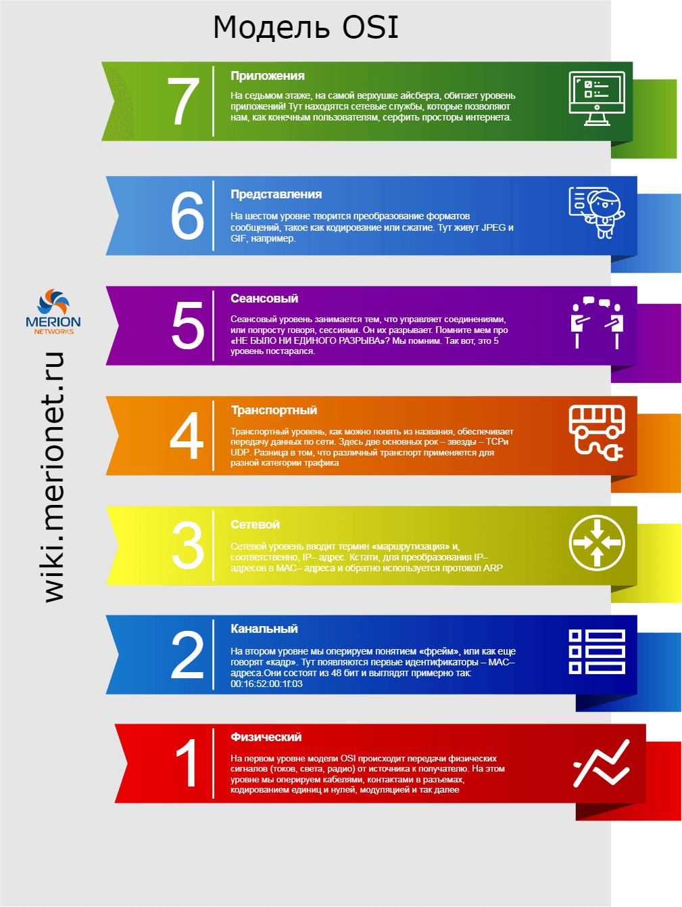
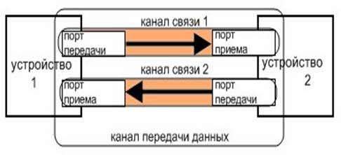
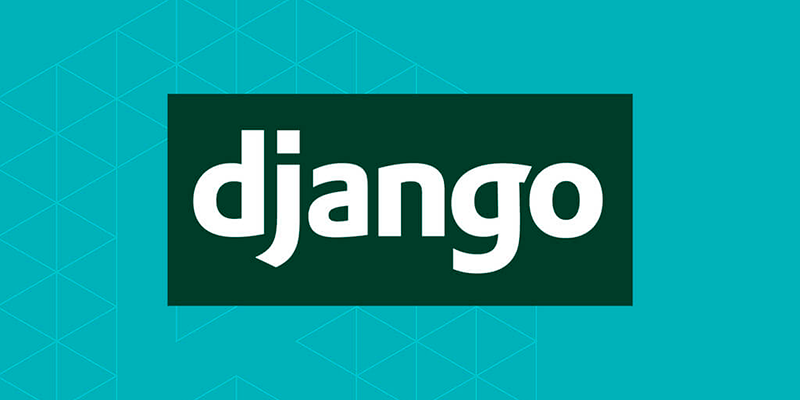
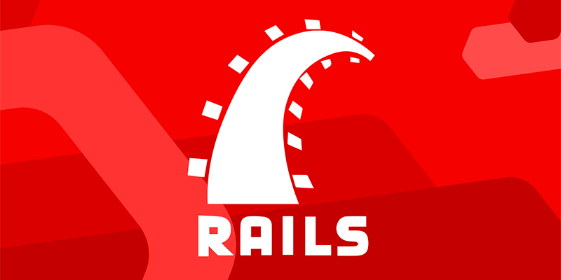
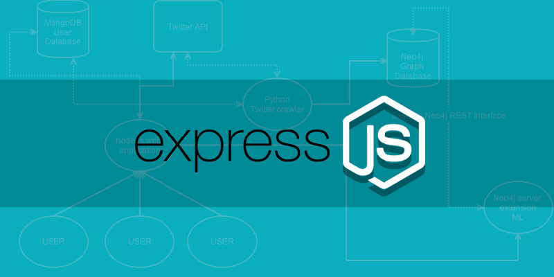
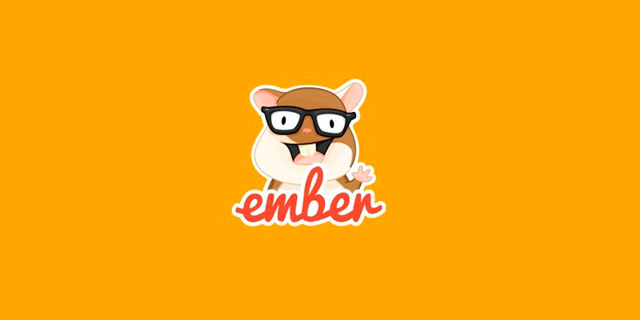

Ответ на билет №19
Модель взаимодействия открытых систем
Модель взаимодействия открытых систем (англ. Open Systems Interconnection) - сетевая модель стека сетевых протоколов OSI/ISO. Посредством данной модели различные сетевые устройства могут взаимодействовать друг с другом. Модель определяет различные уровни взаимодействия систем. Каждый уровень выполняет определённые функции при таком взаимодействии.
1 уровень. Физический (physical). Единицей нагрузки (PDU) здесь является бит. Самый нижний уровень, непосредственно осуществляющий передачу потока данных. Протоколы нам всем хорошо известны: Bluetooth, IRDA (Инфракрасная связь), медные провода (витая пара, телефонная линия), Wi-Fi, и т.д.
2 уровень. Канальный (data link). PDU - кадр (frame). Он нам нужен для взаимодействия сетей на физическом уровне. На этом уровне появляется адресация. Адресом является MAC адрес. Канальный уровень ответственен за доставку кадров адресату и их целостность. В привычных нам сетях на канальном уровне работает протокол ARP. Адресация второго уровня работает только в пределах одного сетевого сегмента и ничего не знает о маршрутизации - этим занимается вышестоящий уровень. Соответственно, устройства, работающие на L2 - коммутаторы, мосты и драйвер сетевого адаптера.
3 уровень. Сетевой (network). PDU пакет (packet). Этот уровень определяет путь, по которому данные будут переданы. Наиболее распространенным протоколом тут является IP. Адресация происходит по IP-адресам, которые состоят из 32 битов. Протокол маршрутизируемый, то есть пакет способен попасть в любую часть сети через какое-то количество маршрутизаторов. На L3 работают маршрутизаторы.
4 уровень. Транспортный (transport). PDU сегмент (segment)/датаграмма (datagram). На этом уровне появляются понятия портов. Тут трудятся TCP и UDP. Протоколы этого уровня отвечают за прямую связь между приложениями и за надежность доставки информации. Например, TCP умеет запрашивать повтор передачи данных в случае, если данные приняты неверно или не все. Так же TCP может менять скорость передачи данных, если сторона приема не успевает принять всё (TCP Window Size).
5 уровень. Сеансовый (session). PDU данные (data). Управляет сеансом связи, обменом информации, правами. Протоколы - L2TP, PPTP.
6 уровень. Представительский (presentation). PDU данные (data). Функциями данного уровня являются представление и шифрование данных. Форматы данных: JPEG, ASCII, MPEG.
7 уровень. Прикладной (application). PDU данные (data). Это самый верхний уровень модели OSI. Он осуществляет связь пользовательских приложений с сетью. Эти приложения нам всем знакомы: просмотр веб-страниц (HTTP), передача и приём почты (SMTP, POP3), приём и получение файлов (FTP, TFTP), удаленный доступ (Telnet) и т.д.
Понятие канала данных
Канал передачи данных - средства двустороннего обмена данными, включающие минимум два канала связи обеспечивающих передачу сигнала во взаимопротивоположных направлениях.
Канал (канал связи) - средства односторонней передачи данных. Примером канала может быть полоса частот, выделенная одному передатчику при радиосвязи. В некоторой линии можно образовать несколько каналов связи, по каждому из которых передается своя информация. При этом говорят, что линия разделяется между несколькими каналами. Существуют два метода разделения линии передачи данных: временное мультиплексирование (иначе разделение по времени или TDM), при котором каждому каналу выделяется некоторый квант времени, и частотное разделение (FDM - Frequency Division Method), при котором каналу выделяется некоторая полоса частот.
Каналы передачи данных можно классифицировать по:- природе физической среды передачи данных (каналы передачи данных на оптических линиях связи, проводных (медных) линиях связи и беспроводные);
- по способу представления информации электрическими сигналами (аналоговые и цифровые);
- по направленияю передачи различают каналы симплексные (односторонняя передача), дуплексные (возможность одновременной передачи в обоих направлениях) и полудуплексные (возможность попеременной передачи в двух направлениях).
Современные фреймворки и их применение для разработки веб-приложений
Фреймворк - программное обеспечение, облегчающее разработку и объединение разных компонентов большого программного проекта. Их можно условно разделить на backend и frontend-фреймворки.
Backend-фреймворки для веб-разработки
Django
Один из популярных фрейморков для веб-разработки на языке Python, который используют в таких проектах, как YouTube, Instagram. Django имеет Model-View-Template-структуру и следует лучшим принципам проектирования: DRY и Соглашение по конфигурации. Имеет множемтво полезных функций: аутентификация, обмен сообщениями, маршрутизация, работа с базой данных, админская часть сайта – все это Django берет на себя.
Особый приоритет отдается безопасности. Фреймворк реализует многие важные принципы защиты самостоятельно, например, предотвращает выполнение кода на уровне шаблонов. Кроме того, есть ряд методов и инструментов, которые могут применяться на усмотрение разработчика.
Rails
Популярный Ruby-фреймворк с классической структурой Model-View-Controller. Rails успешно работает в Airbnb, GitHub, Hulu и Shopify.
Инструмент лоялен к новичкам и имеет невысокий начальный порог вхождения. Однако за сценой там немало магии, стоит сделать несколько первых шагов, и придется карабкаться на крутую горку. Еще один недостаток – сложный процесс разворачивания и запуска на продакшене.
Чтобы сделать работу с фреймворком быстрее и эффективнее, создано множество полезных гемов (gems, пакеты и библиотеки), которые можно подключить к вашему приложению. Rails-сообщество довольно сильное и дружелюбное, кроме того в сети есть немало обучающих ресурсов по этому инструменту.
Express
JavaScript-фреймворк Express позиционируется как минималистичный, быстрый и очень гибкий фреймворк. Он предоставляет все необходимые возможности, при этом активно используя все преимущества и мощность Node.js. Поддерживает REST API. Его используют крупные компании Accenture, IBM и Uber.
Автор фреймворка, TJ Holowaychuk, описывает его как созданный на основе написанного на языке Ruby каркаса Sinatra, подразумевая, что он минималистичен и включает большое число подключаемых плагинов. Express может являться backend'ом для программного стека MEAN, вместе с базой данных MongoDB и каркасом Vue.js, React или AngularJS для frontend'а.
Frontend-фреймворки для веб-разработки
Angular
Это открытая и свободная платформа для разработки веб-приложений, написанная на языке TypeScript, разрабатываемая командой из компании Google, а также сообществом разработчиков из различных компаний. Angular — это полностью переписанный фреймворк от той же команды, которая написала AngularJS.
Данный фреймворк существенно облегчает разработку динамических приложений, благодаря своему синтаксису, простой визуальной манипуляции объектами, а также двусторонней привязке данных.
Vue
Vue — это прогрессивный фреймворк для создания пользовательских интерфейсов. В отличие от фреймворков-монолитов, Vue создан пригодным для постепенного внедрения. Его ядро в первую очередь решает задачи уровня представления (view), что упрощает интеграцию с другими библиотеками и существующими проектами. С другой стороны, Vue полностью подходит и для создания сложных одностраничных приложений (SPA, Single-Page Applications), если использовать его совместно с современными инструментами и дополнительными библиотеками.
Ember
В 2015 году Ember был назван лучшим JavaScript-фреймворком. Пять лет спустя он все еще популярен. Сообщество продолжает расширяться, появляются новые функции и релизы. Инструмент используется в Google, Microsoft, Heroku и Netflix.
По умолчанию в Ember доступна двусторонняя привязка данных (привязка элемента DOM к значению компонента), а также множество полезных функций и компонентов. Ember имеет чёткую и рациональную архитектуру, подходящую для разработки сложных веб-приложений.
Основная цель фреймворка – максимизировать продуктивность разработчика. Для этого он применяет лучшие практики программирования.